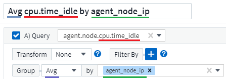
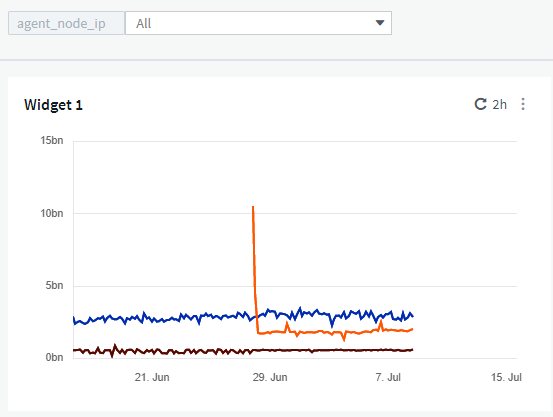
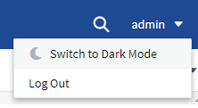
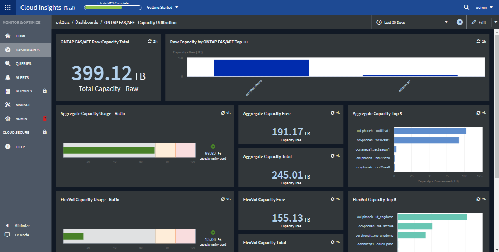

请求文档变更
请求文档变更 在 GitHub 上编辑
在 GitHub 上编辑 提供者指南
提供者指南信息板功能
通过信息板和小工具，可以非常灵活地显示数据。以下是一些概念，可帮助您从自定义信息板中获得最大收益。
小工具命名
小工具会根据为第一个小工具查询选择的对象，指标或属性自动命名。如果您还为小工具选择了分组，则 " 分组依据 " 属性将包含在自动命名（聚合方法和指标）中。

选择新对象或分组属性将更新自动名称。
如果您不想使用自动小工具名称，只需键入一个新名称即可。
小工具放置和大小
所有信息板小工具都可以根据您对每个特定信息板的需求进行定位和调整大小。
复制小工具
在信息板编辑模式下，单击小工具上的菜单并选择 * 重复 * 。此时将启动小工具编辑器，并预先填充原始小工具的配置，并在小工具名称中添加一个 " 副本 " 后缀。您可以轻松进行任何必要的更改并保存新小工具。小工具将放置在信息板底部，您可以根据需要进行定位。完成所有更改后，请记得保存信息板。

显示小工具图例
信息板上的大多数小工具可以显示图例，也可以不显示图例。可以通过以下任一方法在信息板上打开或关闭小工具中的图例：
-
显示信息板时，单击小工具上的 * 选项 * 按钮，然后在菜单中选择 * 显示图例 * 。
随着小工具中显示的数据发生变化，该小工具的图例将动态更新。
显示图例时，如果图例指示的资产登录页面可以导航到，则该图例将显示为指向该资产页面的链接。如果图例显示 " 全部 " ，则单击此链接将显示与小工具中的第一个查询对应的查询页面。
转变指标
Cloud Insights 在小工具中为某些指标提供了不同的 * 转换 * 选项（具体而言，称为 " 自定义 " 或集成指标的指标，例如来自 Kubernetes ， ONTAP 高级数据， Telegraf 插件等），允许您以多种方式显示数据。向小工具添加可转换指标时，系统会显示一个下拉列表，其中提供了以下转换选项：
- 无
-
数据显示为 " 是 " ，不会进行任何操作。
- 速率
-
当前值除以自上次观察以来的时间范围。
- 累积
-
先前值与当前值之和的累积值。
- 增量
-
上一个观察值与当前值之间的差值。
- 增量速率
-
增量值除以自上次观察以来的时间范围。
- 累积速率
-
累积值除以自上次观察以来的时间范围。
请注意，转换指标不会更改底层数据本身，而只是更改数据的显示方式。
信息板小工具查询和筛选器
查询
信息板小工具中的查询是一个用于管理数据显示的强大工具。下面是有关小工具查询的一些注意事项。
某些小工具最多可以包含五个查询。每个查询都将在小工具中绘制自己的一组折线或图形。在一个查询上设置汇总，分组，前 / 后结果等不会影响小工具的任何其他查询。
您可以单击眼睛图标以临时隐藏查询。隐藏或显示查询时，小工具显示会自动更新。这样，您就可以在构建小工具时检查所显示的数据中的各个查询。
以下小工具类型可以包含多个查询：
-
分区图
-
堆积分区图
-
折线图
-
样条曲线图
-
单值小工具
其余小工具类型只能有一个查询：
-
表
-
条形图
-
框图
-
散点图
在信息板小工具查询中筛选
下面介绍了一些可以从筛选器中获得最大收益的操作。
精确匹配筛选
如果将筛选器字符串用双引号括起来， Insight 会将第一个和最后一个报价之间的所有内容视为完全匹配。引号中的任何特殊字符或运算符将被视为文字。例如，筛选 "*" 将返回文字星号结果；在这种情况下，星号不会视为通配符。如果用双引号括起来，则操作符 AND ， OR 和 NOT 也会被视为文字字符串。
您可以使用完全匹配筛选器来查找特定资源，例如主机名。如果您只想查找主机名 "arking" ，而不想查找 "arking01" ， "arking-boston" 等内容，只需用双引号将名称 "marketing" 括起来即可。
通配符和表达式
在查询或信息板小工具中筛选文本或列表值时，在开始键入时，系统会显示一个选项，用于根据当前文本创建 * 通配符筛选器 * 。选择此选项将返回与通配符表达式匹配的所有结果。您也可以使用 NOT 或 OR 创建 * 表达式 * ，也可以选择 " 无 " 选项来筛选字段中的空值。

基于通配符或表达式（例如 NOT ， OR ， "None" 等）在筛选器字段中显示为深蓝色。您直接从列表中选择的项目将以淡蓝色显示。

请注意，通配符和表达式筛选适用于文本或列表，但不适用于数值，日期或布尔值。
具有预键入建议的高级文本筛选
为某个字段选择一个或多个值时，该查询的其他筛选器将显示与该筛选器相关的值。例如，在为特定对象 Name 设置筛选器时，用于筛选 Model 的字段将仅显示与该对象名称相关的值。
请注意，只有文本筛选器才会显示上下文预键入建议。日期，枚举（列表）等不会显示预键入建议。也就是说，您可以对枚举（即列表）字段设置筛选器，并在上下文中筛选其他文本字段。例如，如果在数据中心等 Enum 字段中选择一个值，则其他筛选器将仅显示该数据中心中的型号 / 名称，而不会显示相反。
选定时间范围还将为筛选器中显示的数据提供上下文。
选择筛选单元
在筛选字段中键入值时，您可以选择要在图表上显示值的单位。例如，您可以按原始容量进行筛选并选择以 deafResult GiB 显示，或者选择其他格式，例如 TiB 。如果您的信息板上有许多图表以 TiB 显示值，并且您希望所有图表显示一致的值，则此功能非常有用。

其他筛选改进
以下内容可用于进一步细化筛选器。
-
星号可用于搜索所有内容。例如：
vol*rhel
显示以 "vol" 开头，以 "rhel" 结尾的所有资源。
-
问号用于搜索特定数量的字符。例如：
BOS-PRD??-S12
显示 BOS-PRD12-S12 ， BOS-PRD13-S12 等。
-
或运算符可用于指定多个实体。例如：
FAS2240 OR CX600 OR FAS3270
查找多个存储型号。
-
使用 NOT 运算符可以从搜索结果中排除文本。例如：
NOT EMC*
查找不以 "EMC" 开头的所有内容。您可以使用
NOT *
以显示不包含任何值的字段。
确定查询和筛选器返回的对象
查询和筛选器返回的对象与下图所示的对象类似。分配有 " 标记 " 的对象是标注，而不带标记的对象是性能计数器或对象属性。

分组和聚合
分组（向上滚动）
从采集期间收集的底层数据点对小工具中显示的数据进行分组（有时称为汇总）。例如，如果您有一个折线图小工具显示一段时间内的存储 IOPS ，则您可能希望为每个数据中心显示一条单独的行，以便进行快速比较。您可以选择通过以下几种方式之一对这些数据进行分组：
-
* 平均 * ：将每行显示为基础数据的 _average 。
-
* 最大值 * ：将每行显示为基础数据的 max 。
-
* 最小 * ：将每行显示为基础数据的最小值。
-
* 求和 * ：将每行显示为基础数据的 sum 。
-
* 计数 * ：显示在指定时间范围内报告数据的对象的 count 。您可以根据信息板时间范围（或小工具时间范围，如果设置为覆盖信息板时间）或您选择的 Custom 时间窗口 _ 来选择 _Entire Time window 。
要设置分组方法，请执行以下操作。
-
在小工具的查询中，选择资产类型和指标（例如 Storage ）以及指标（例如 Performance IOPS Total ）。
-
对于 * 组 * ，选择一种汇总方法（例如 Avg ），然后选择用于汇总数据的属性或指标（例如 Data Center ）。
此小工具会自动更新并显示每个数据中心的数据。
您也可以选择将底层数据的 all 分组到图表或表中。在这种情况下，小工具中的每个查询都将显示一行，其中将显示所有底层资产的所选指标或指标的平均值，最小值，最大值，总和或计数。
单击数据按 " 全部 " 分组的任何小工具的图例将打开一个查询页面，其中显示了此小工具中使用的第一个查询的结果。
如果为查询设置了筛选器，则会根据筛选的数据对数据进行分组。
请注意，如果您选择按任何字段（例如 Model ）对小工具进行分组，则仍需要按该字段进行筛选，以便在图表或表中正确显示该字段的数据。
正在聚合数据
您可以通过将数据点聚合为分钟，小时或天分段，然后再按属性（如果已选择）汇总这些数据，进一步对齐时间序列图表（折线图，区域图等）。您可以选择根据数据点的 Avg ， Max ， Min 或 Sum 或按选定间隔内收集的 last 数据点进行聚合。要选择聚合方法，请单击小工具查询部分中的 * 更多选项 * 。
如果间隔较小且时间范围较长，则可能会导致 " 聚合间隔导致数据点太多 " 警告。如果间隔较小，则可能会看到此情况，并将信息板时间范围增加到 7 天。在这种情况下， Insight 将临时增加聚合间隔，直到您选择较短的时间范围为止。
您还可以在条形图小工具和单值小工具中聚合数据。
默认情况下，大多数资产计数器聚合到 Avg 。默认情况下，某些计数器聚合到 Max ， min 或 Sum 。例如，默认情况下，端口错误聚合到 Sum ，其中存储 IOPS 聚合到 Avg 。
显示顶部 / 底部结果
在图表小工具中，您可以显示已汇总数据的 * 前 * 或 * 后 * 结果，并从提供的下拉列表中选择显示的结果数。在表小工具中，您可以按任意列进行排序。
顶部 / 底部图表小工具
在图表小工具中，如果选择按特定属性汇总数据，则可以选择查看前 N 个或后 N 个结果。请注意，如果选择按 all 属性汇总，则不能选择前几个或后几个结果。
您可以选择要显示的结果，方法是在查询的 * 显示 * 字段中选择 * 顶部 * 或 * 底部 * ，然后从提供的列表中选择一个值。
表小工具显示条目
在表小工具中，您可以选择表结果中显示的结果数。您无法选择前一个或后一个结果，因为该表允许您根据需要按任意列进行升序或降序排序。
您可以从查询的 * 显示条目 * 字段中选择一个值，以选择要在信息板上的表中显示的结果数。
在表小工具中分组
表小工具中的数据可以按任何可用属性进行分组，以便您查看数据概览，并深入了解数据以了解更多详细信息。此表中的指标会进行汇总，以便在每个折叠行中轻松查看。
通过表小工具，您可以根据设置的属性对数据进行分组。例如，您可能希望表显示按存储所在的数据中心分组的总存储 IOPS 。或者，您可能希望显示一个根据托管虚拟机的虚拟机管理程序进行分组的虚拟机表。从列表中，您可以展开每个组以查看该组中的资产。
分组仅在表小工具类型中可用。
分组示例（介绍了汇总）
通过表小工具，您可以对数据进行分组，以便于显示。
在此示例中，我们将创建一个表小工具，其中显示按数据中心分组的所有 VM 。
-
创建或打开信息板，然后添加 * 表 * 小工具。
-
选择 Virtual Machine 作为此小工具的资产类型。
-
单击列选择器，然后选择 Hypervisor name 和 IOPS - Total 。
此时，这些列将显示在此表中。
-
我们将忽略不具有 IOPS 的任何虚拟机，并且仅包括总 IOPS 大于 1 的虚拟机。单击 * 筛选依据 * * * * 。 [+]* 按钮，然后选择 IOPS - 总计。单击 _any ，然后在 * 自 * 字段中键入 * 1 * 。将 * 至 * 字段留空。按 Enter 键，然后单击关闭筛选字段以应用筛选器。
此时，此表将显示总 IOPS 大于或等于 1 的所有虚拟机。请注意，表中没有分组。此时将显示所有 VM 。
-
单击 * 分组依据 +]* 按钮。
您可以按显示的任何属性或标注进行分组。选择 all 可显示一个组中的所有虚拟机。
性能指标的任何列标题都会显示一个 " 三个点 " 菜单，其中包含一个 * 汇总 * 选项。默认汇总方法为 Avg 。这意味着，为组显示的数字是为组内每个虚拟机报告的所有总 IOPS 的平均值。您可以选择按 Avg ， Sum ， Min 或 Max 向上滚动此列。您显示的任何包含性能指标的列均可单独汇总。

-
单击 all 并选择 Hypervisor name 。
此时，虚拟机列表将按虚拟机管理程序进行分组。您可以展开每个虚拟机管理程序以查看其托管的虚拟机。
-
单击 * 保存 * 将此表保存到信息板。您可以根据需要调整小工具的大小或移动小工具。
-
单击 * 保存 * 以保存信息板。
性能数据汇总
如果在表小工具中包含性能数据列（例如 IOPS - 总计 _ ），则在选择对数据进行分组时，您可以为该列选择一种汇总方法。默认汇总方法是，在组行中显示基础数据的平均值（ _avg ）。您还可以选择显示数据的总和，最小值或最大值。
信息板时间范围选择器
您可以选择信息板数据的时间范围。只有与选定时间范围相关的数据才会显示在信息板上的小工具中。您可以从以下时间范围中进行选择：
-
过去 15 分钟
-
过去 30 分钟
-
过去 60 分钟
-
过去 2 小时
-
过去 3 小时（这是默认值）
-
过去 6 小时
-
过去 12 小时
-
过去 24 小时
-
过去 2 天
-
过去 3 天
-
过去 7 天
-
过去 30 天
-
自定义时间范围
自定义时间范围允许您最多选择 31 个连续日期。您还可以为此范围设置开始时间和一天中的结束时间。默认开始时间为选定第一天的中午 12 ： 00 ，默认结束时间为选定最后一天的晚上 11 ： 59 。单击 * 应用 * 将对信息板应用自定义时间范围。
覆盖各个小工具中的信息板时间
您可以覆盖各个小工具中的主信息板时间范围设置。这些小工具将根据其设置的时间范围而不是信息板时间范围显示数据。
要覆盖信息板时间并强制小工具使用其自己的时间范围，请在小工具的编辑模式下将 * 覆盖信息板时间 * 设置为 * 开 * （选中此框），然后为此小工具选择一个时间范围。将小工具 * 保存到信息板。
小工具将根据为其设置的时间范围显示其数据，而不管您在信息板上选择的时间范围如何。
您为一个小工具设置的时间范围不会影响信息板上的任何其他小工具。
主轴和二级轴
不同的指标会对其在图表中报告的数据使用不同的度量单位。例如，在查看 IOPS 时，度量单位是每秒 I/O 操作数（ IO/s ），而延迟则纯粹是时间（毫秒，微秒，秒等）的度量单位。在一个折线图上为 Y 轴使用一组 A 值绘制这两个指标时，延迟数字（通常为几毫秒）会以 IOPS （通常以千为单位）为同一比例绘制，而延迟线在该比例下会丢失。
但是，可以通过在主（左侧） Y 轴上设置一个度量单位，在二级（右侧） Y 轴上设置另一个度量单位，在一个有意义的图形上绘制这两组数据。每个指标都按自己的比例绘制。
此示例说明了图表小工具中的主轴和二级轴的概念。
-
创建或打开信息板。向信息板添加折线图，样条曲线图，分区图或堆积分区图小工具。
-
选择资产类型（例如 Storage ），然后选择 IOPS - Total 作为第一个指标。设置所需的任何筛选器，并根据需要选择一种汇总方法。
IOPS 线显示在图表上，其比例显示在左侧。
-
单击 * （ + 查询） * 向图表中添加第二行。对于此行，请选择 Latency - Total 作为指标。
请注意，该线显示在图表底部的平面上。这是因为它与 IOPS 线是以相同的比例绘制的。
-
在延迟查询中，选择 * Y 轴：二级 * 。
此时，延迟线将按自己的比例绘制，并显示在图表的右侧。

小工具中的表达式
在信息板中，任何时间序列小工具（线，样条曲线，区域，堆积区），单值， 或 Gauge Widget 可用于根据您选择的指标构建表达式，并在一个图形中显示这些表达式的结果。以下示例使用表达式解决特定问题。在第一个示例中，我们希望将环境中所有存储资产的读取 IOPS 显示为总 IOPS 的百分比。第二个示例显示了环境中发生的 " 系统 " 或 " 开销 " IOPS ，即不直接从读取或写入数据中获取的 IOPS 。
您可以在表达式中使用变量（例如： $VAR1 * 100 ）
表达式示例：读取 IOPS 百分比
在此示例中，我们希望将读取 IOPS 显示为总 IOPS 的百分比。您可以将其视为以下公式：
Read Percentage = (Read IOPS / Total IOPS) x 100 这些数据可以显示在信息板上的折线图中。要执行此操作，请执行以下步骤：
-
创建新信息板，或者在编辑模式下打开现有信息板。
-
向信息板添加小工具。选择 * 分区图 * 。
此时，此小工具将以编辑模式打开。默认情况下，系统会显示一个查询，其中显示 Storage 资产的 _IOPS - 总计 _ 。如果需要，请选择其他资产类型。
-
单击右侧的 * 转换为表达式 * 链接。
当前查询将转换为表达式模式。请注意，在表达式模式下无法更改资产类型。在表达式模式下，此链接将更改为 * 还原到查询 * 。如果您希望随时切换回查询模式，请单击此按钮。请注意，在不同模式之间切换会将字段重置为其默认值。
目前，请保持表达式模式。
-
现在， * IOPS - 总计 * 指标位于字母变量字段 "* A*" 中。在 "* b*" 变量字段中，单击 * 选择 * ，然后选择 * IOPS - Read* 。
通过单击变量字段后面的 + 按钮，您最多可以为表达式添加五个字母变量。对于读取百分比示例，我们只需要总 IOPS （ "* A*" ）和读取 IOPS （ "* b*" ）。
-
在 * 表达式 * 字段中，您可以使用与每个变量对应的字母来构建表达式。我们知道读取百分比 = （读取 IOPS/ 总 IOPS ） x 100 ，因此我们将此表达式写入为：
(b / a) * 100 . * 标签 * 字段用于标识表达式。将此标签更改为 " 读取百分比 " 或对您同样有意义的内容。 . 将 * 单元 * 字段更改为 "%" 或 "percent" 。
此图表显示选定存储设备的 IOPS 读取百分比随时间的变化。如果需要，您可以设置筛选器或选择其他汇总方法。请注意，如果选择 Sum 作为汇总方法，则所有百分比值将相加，这可能会高于 100% 。
-
单击 * 保存 * 将图表保存到信息板。
您还可以在折线图， Spline 图表或堆栈区域图表小工具中使用表达式。
表达式示例： "system" I/O
示例 2 ：从数据源收集的指标包括读取，写入和总 IOPS 。但是，数据源报告的 IOPS 总数有时包括 " 系统 "IOPS ，而这些 IOPS 不是数据读取或写入的直接部分。此系统 I/O 也可视为 " 开销 " I/O ，这对于系统正常运行是必需的，但与数据操作没有直接关系。
要显示这些系统 I/O ，您可以从采集报告的总 IOPS 中减去读取和写入 IOPS 。公式可能如下所示：
System IOPS = Total IOPS - (Read IOPS + Write IOPS) 然后，这些数据可以显示在信息板上的折线图中。要执行此操作，请执行以下步骤：
-
创建新信息板，或者在编辑模式下打开现有信息板。
-
向信息板添加小工具。选择 * 折线图 * 。
此时，此小工具将以编辑模式打开。默认情况下，系统会显示一个查询，其中显示 Storage 资产的 _IOPS - 总计 _ 。如果需要，请选择其他资产类型。
-
在 * 汇总 * 字段中，选择 Sum by all 。
此图表将显示一条线，其中显示了总 IOPS 的总和。
-
单击 _ 复制此查询 _ 图标
 创建查询的副本。
创建查询的副本。在原始查询下方添加一个查询副本。
-
在第二个查询中，单击 * 转换为表达式 * 按钮。
当前查询将转换为表达式模式。如果您希望随时切换回查询模式，请单击 * 还原至查询 * 。请注意，在不同模式之间切换会将字段重置为其默认值。
目前，请保持表达式模式。
-
现在， IOPS - Total 指标位于字母变量字段 "* A*" 中。单击 IOPS - Total 并将其更改为 IOPS - Read 。
-
在 "* b*" 变量字段中，单击 * 选择 * 并选择 IOPS - Write 。
-
在 * 表达式 * 字段中，您可以使用与每个变量对应的字母来构建表达式。我们将表达式简单地写为：
a + b
在显示部分中，为此表达式选择 * 分区图 * 。
-
* 标签 * 字段用于标识表达式。将此标签更改为 " 系统 IOPS" 或对您同样有意义的内容。
此图表以折线图的形式显示总 IOPS ，下面是一个分区图，其中显示了读取和写入 IOPS 的组合。两者之间的差距显示了与数据读取或写入操作没有直接关系的 IOPS 。这些是您的 " 系统 "IOPS 。
-
单击 * 保存 * 将图表保存到信息板。
要在表达式中使用变量，只需键入变量名称即可，例如 $var1 * 100 。表达式只能使用数字变量。
变量
通过变量，您可以一次性更改信息板上部分或所有小工具中显示的数据。通过将一个或多个小工具设置为使用通用变量，在一个位置所做的更改将每个小工具中显示的数据设置为发生原因以自动更新。
信息板变量有多种类型，可以在不同的字段中使用，并且必须遵循命名规则。此处将介绍这些概念。
变量类型
变量可以是以下类型之一：
-
* 属性 * ：使用对象的属性或指标进行筛选
-
* 标注 * ：使用预定义的 "标注" 筛选小工具数据。
-
* 文本 * ：字母数字字符串。
-
* 数字 * ：数字值。单独使用，或者作为 " 发件人 " 或 " 收件人 " 值，具体取决于小工具字段。
-
* 布尔值 * ：用于值为 True/False ， Yes/No 等的字段。对于布尔变量，选项包括 " 是 " ， " 否 " ， " 无 " ， " 任何 " 。
-
* 日期 * ：日期值。根据小工具的配置，使用作为 " 从 " 或 " 到 " 值。

属性变量
通过选择属性类型变量，您可以筛选包含指定属性值或值的小工具数据。以下示例显示了一个折线小工具，其中显示了代理节点的可用内存趋势。我们为代理节点 IP 创建了一个变量，当前设置为显示所有 IP ：

但是，如果您暂时只想查看环境中各个子网上的节点，则可以将变量设置或更改为特定的代理节点 IP 。此处，我们仅查看 "123" 子网上的节点：

此外，您还可以通过在变量字段中指定 * 。 vendor 来设置一个变量以筛选具有特定属性的 all 对象，而不考虑对象类型，例如属性为 "vendor" 的对象。您无需键入 "* 。 " ；如果选择通配符选项， Cloud Insights 将提供此选项。

下拉可变值的选项列表时，结果将进行筛选，以便根据信息板上的对象仅显示可用供应商。

如果在信息板上编辑与属性筛选器相关的小工具（即，小工具的对象包含任何 * 。 vendor attribute ），则会显示属性筛选器已自动应用。

应用变量与更改所选属性数据一样简单。
标注变量
通过选择 Annotation 变量，您可以筛选与该标注关联的对象，例如属于同一数据中心的对象。

文本，数字，日期或布尔变量
您可以通过选择 text ， number ， boooleal 或 Date 的变量类型来创建与特定属性不关联的通用变量。创建变量后，您可以在小工具筛选字段中选择它。在小工具中设置筛选器时，除了可以为筛选器选择的特定值之外，为信息板创建的任何变量都会显示在列表中，这些变量分组在下拉列表的 " 变量 " 部分下，名称以 "$" 开头。通过在此筛选器中选择一个变量，您可以搜索在信息板本身的变量字段中输入的值。在筛选器中使用该变量的任何小工具都将动态更新。

变量筛选器范围
在向信息板添加标注或属性变量时，该变量可以应用于信息板上的 all 小工具，这意味着信息板上的所有小工具都将显示根据您在该变量中设置的值进行筛选的结果。

请注意，只能按此方式自动筛选属性和标注变量。不能自动筛选非标注或 -Attribute-variables 。必须将每个小工具配置为使用这些类型的变量。
要禁用自动筛选，以便变量仅对您专门设置的小工具进行适用场景，请单击 " 自动筛选 " 滑块将其禁用。
要在单个小工具中设置变量，请在编辑模式下打开此小工具，然后在 _Filter by" 字段中选择特定标注或属性。使用 Annotation 变量，您可以选择一个或多个特定值，也可以选择变量名称（由前导 "$" 指示），以便在信息板级别键入变量。相同的适用场景属性变量。只有您为其设置了变量的小工具才会显示经过筛选的结果。
要在表达式中使用变量，只需在表达式中键入变量名称即可，例如： $var1 * 100 。表达式只能使用数字变量。不能在表达式中使用数值标注或属性变量。
变量命名
变量名称：
-
必须仅包含字母 a-z ，数字 0-9 ，句点（ . ），下划线（ _ ）和空格（）。
-
不能超过 20 个字符。
-
区分大小写： $CityName 和 $CityName 是不同的变量。
-
不能与现有变量名称相同。
-
不能为空。
正在格式化 Gauge 小工具
通过 Solid 和 Bullet Gauge 小工具，您可以为 Warning 和 / 或 critical 级别设置阈值，从而清晰地表示您指定的数据。

要为这些小工具设置格式，请执行以下步骤：
-
选择要突出显示大于（ > ）或小于（ < ）阈值的值。在此示例中，我们将突出显示大于（ > ）阈值级别的值。
-
为 " 警告 " 阈值选择一个值。当小工具显示大于此级别的值时，它将以橙色显示仪表。
-
为 " 严重 " 阈值选择一个值。如果值大于此级别，则会通过发生原因将仪表显示为红色。
您也可以选择量表的最小值和最大值。低于最小值的值不会显示此仪表。如果值高于最大值，则会显示一个全满量表。如果不选择最小值或最大值，小工具将根据小工具的值选择最佳最小值和最大值。


正在格式化单值小工具
在单值小工具中，除了设置警告（橙色）和严重（红色）阈值之外，您还可以选择以绿色或白色背景显示 " 范围内 " 值（低于警告级别的值）。

单击单值小工具或量表小工具中的链接将显示与此小工具中的第一个查询对应的查询页面。
选择用于显示数据的单位
信息板上的大多数小工具都允许您指定显示值的单位，例如 migums ， migents ， _percentage _ ， _mms （ ms ） _ ， 等。在许多情况下， Cloud Insights 知道所采集数据的最佳格式。如果不知道最佳格式，您可以设置所需的格式。
在下面的折线图示例中，为小工具选择的数据已知为 bytes （基本 IEC 数据单元：请参见下表），因此基本单元会自动选择为 "byte （ B ） " 。但是，数据值足够大，可以显示为吉字节（ GiB ），因此默认情况下， Cloud Insights 会将这些值自动格式化为吉字节（ GiB ）。图中的 Y 轴显示 "GiB" 作为显示单位，所有值均以该单位显示。

如果要以其他单位显示图形，可以选择其他格式来显示值。由于本示例中的基本单位是 byte ，因此您可以从支持的 " 基于字节 " 格式中进行选择：位（ b ），字节（ B ），千字节（ KiB ），兆字节（ MiB ），千字节（ GiB ）。Y 轴标签和值会根据您选择的格式进行更改。

如果基本单位未知，您可以从中分配一个单位 "可用单元"或键入您自己的。分配基础单元后，您可以选择以适当的受支持格式之一显示数据。

要清除设置并重新开始，请单击 * 重置默认值 * 。
关于自动格式化的一句话
大多数指标都是由数据收集器以最小单位报告的，例如，以 1 ， 234 ， 567 ， 890 字节等整数形式报告。默认情况下， Cloud Insights 会自动为可读性最高的显示设置值格式。例如， 1 ， 234 ， 567 ， 890 字节的数据值将自动格式化为 1.23 Gibibytes 。您可以选择以其他格式显示，例如 mebibybes 。此时将相应地显示此值。

|
Cloud Insights 使用美国英语数字命名标准。美国的 " 十亿 " 相当于 " 千亿 " 。 |
包含多个查询的小工具
如果您有一个时间序列小工具（即，折线，样条，区域，堆积区），其中包含两个查询，这两个查询都绘制了主 Y 轴，则基准单位不会显示在 Y 轴的顶部。但是，如果小工具在主 Y 轴上有一个查询，在二级 Y 轴上有一个查询，则会显示每个小工具的基本单位。

如果小工具包含三个或更多查询，则基准单位不会显示在 Y 轴上。
可用单元
下表按类别显示了所有可用的单位。
* 类别 * |
* 单元 * |
Currency |
以美元计 |
数据（ IEC ） |
位字节千字节兆字节兆字节太字节对等字节外字节 |
数据速率（ IEC ） |
位 / 秒字节 / 秒千字节 / 秒兆字节 / 秒太字节 / 秒对等字节 / 秒 |
数据（度量值） |
千字节兆字节千兆字节太字节兆字节外字节 |
数据速率（度量值） |
千字节 / 秒兆字节 / 秒千兆字节 / 秒兆字节 / 秒兆字节 / 秒兆字节 / 秒 |
IEC |
Kibi mebi gibi tebi pebi exbi |
小数 |
这一数字达到了数千亿亿亿亿亿亿亿亿亿亿 |
百分比 |
百分比 |
时间 |
纳秒微秒毫秒秒秒秒秒秒秒分钟 |
温度 |
温度为 ° C |
Frequency |
Hertz 千兆赫千兆赫千兆赫 |
CPU |
纳米矿石微核微核核心千兆矿石巨型矿石，千兆矿石，百万石，百万石，百万石，百万石，百万石，百万石，百万石，百万石，百万石，百万石，百万石，百万 |
吞吐量 |
I/O 操作数 / 秒操作数 / 秒请求数 / 秒读取数 / 秒写入数 / 秒操作数 / 分钟读取数 / 分钟写入数 / 分钟 |
TV 模式和自动刷新
信息板和资产登录页面上的小工具中的数据会根据选定信息板时间范围（或小工具时间范围，如果设置为覆盖信息板时间）确定的刷新间隔自动刷新。刷新间隔取决于小工具是时间序列（折线图，样条曲线图，面积图，堆积面积图）还是非时间序列（所有其他图表）。
信息板时间范围 |
时间序列刷新间隔 |
非时间序列刷新间隔 |
过去 15 分钟 |
10 秒 |
1 分钟 |
过去 30 分钟 |
15 秒 |
1 分钟 |
过去 60 分钟 |
15 秒 |
1 分钟 |
过去 2 小时 |
30 秒 |
5 分钟 |
过去 3 小时 |
30 秒 |
5 分钟 |
过去 6 小时 |
1 分钟 |
5 分钟 |
过去 12 小时 |
5 分钟 |
10 分钟 |
过去 24 小时 |
5 分钟 |
10 分钟 |
过去 2 天 |
10 分钟 |
10 分钟 |
过去 3 天 |
15 分钟 |
15 分钟 |
过去 7 天 |
1 小时 |
1 小时 |
过去 30 天 |
2 小时 |
2 小时 |
每个小工具都会在小工具的右上角显示其自动刷新间隔。
自定义信息板时间范围不支持自动刷新。
与 * 电视模式 * 结合使用时，自动刷新功能可在信息板或资产页面上近乎实时地显示数据。TV 模式提供了一个清晰的显示；导航菜单将被隐藏，从而为数据显示提供更多屏幕空间，编辑按钮也是一样。TV 模式会忽略典型的 Cloud Insights 超时，使显示保持活动状态，直到通过授权安全协议手动或自动注销为止。
|
|
由于 NetApp Cloud Central 自身的用户登录超时为 7 天，因此 Cloud Insights 也必须注销该事件。您只需重新登录，您的信息板就会继续显示。 |
-
要激活 TV 模式，请单击 按钮。
-
要禁用 TV 模式，请单击屏幕左上角的 * 退出 * 按钮。

您可以单击右上角的暂停按钮暂时暂停自动刷新。暂停后，信息板时间范围字段将显示暂停数据的活动时间范围。在暂停自动刷新期间，仍在采集和更新您的数据。单击恢复按钮继续自动刷新数据。

信息板组
通过分组，您可以查看和管理相关信息板。例如，您可以为环境中的存储配置一个专用信息板组。信息板组在 * 信息板 > 显示所有信息板 * 页面上进行管理。

默认情况下会显示两个组：
-
所有信息板 * 列出了所有已创建的信息板，而不管其所有者如何。
-
* 我的信息板 * 仅列出当前用户创建的信息板。
每个组中包含的信息板数量显示在组名称旁边。
要创建新组，请单击 "+" 创建新信息板组 * 按钮。输入组的名称，然后单击 * 创建组 * 。此时将创建一个具有此名称的空组。
要向组中添加信息板，请单击 All Dashboards 组以显示您环境中的所有信息板，如果您只想查看自己拥有的信息板，请单击 My Dashboards ，然后执行以下操作之一：
-
要添加单个信息板，请单击信息板右侧的菜单，然后选择 Add to Group 。
-
要将多个信息板添加到一个组中，请通过单击每个信息板旁边的复选框来选择这些信息板，然后单击 * 批量操作 * 按钮并选择 Add to Group 。
通过选择 Remove from Group ，以相同的方式从当前组中删除信息板。您不能从 All Dashboards 或 My Dashboards 组中删除信息板。
|
|
从组中删除信息板不会从 Cloud Insights 中删除信息板。要完全删除信息板，请选择信息板并单击 Delete 。此操作会将其从其所属的任何组中删除，并且任何用户都无法再使用它。 |
固定您喜爱的信息板
您可以通过将收藏的信息板固定到信息板列表顶部来进一步管理信息板。要固定信息板，只需单击将鼠标悬停在任意列表中的信息板上时显示的拇指锁定按钮即可。
信息板固定 / 取消固定是单个用户首选项，与信息板所属的组无关。

暗主题
您可以选择使用浅色主题（默认设置）来显示 Cloud Insights ，该主题使用浅色背景和暗文本显示大多数屏幕，或者使用暗背景和浅文本显示大多数屏幕。
要在浅色和暗色主题之间切换，请单击屏幕右上角的用户名按钮并选择所需主题。

暗主题信息板视图： 
轻型主题信息板视图：
|
|
某些屏幕区域（例如某些小工具图表）仍会显示浅色背景，即使在以暗主题查看时也是如此。 |
折线图插值
不同的数据收集器通常会按不同的时间间隔轮询数据。例如，数据收集器 A 可能每 15 分钟轮询一次，而数据收集器 B 则每 5 分钟轮询一次。当折线图小工具（也包括样条曲线图，分区图和堆积分区图）将多个数据收集器中的数据聚合为一行时（例如，当小工具按 " 全部 " 分组时）， 并且每五分钟刷新一次该行，收集器 B 中的数据可能会准确显示，而收集器 A 中的数据可能会出现空隙，从而影响聚合，直到收集器 A 再次轮询为止。
为了缓解这种情况， Cloud Insights 会在聚合时对数据进行内插，并使用周围的数据点对数据进行 " 最佳推测 " ，直到数据收集器再次轮询为止。您始终可以通过调整小工具的分组来单独查看每个数据收集器的对象数据。